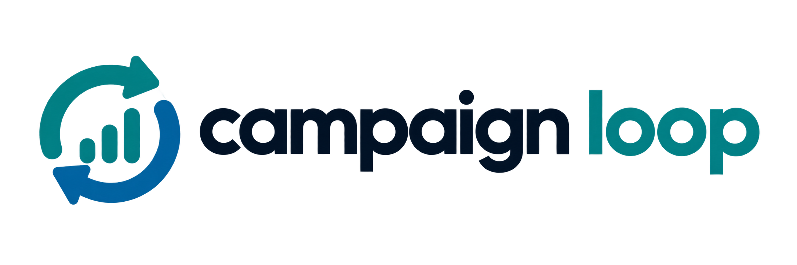

سه ایستگاه روی یک زنجیرهی شناسه: Designer ده دیدگاه میدهد، Simulator بازه میسازد، Verifier انحراف را به علت نسبت میدهد و نرخها را کالیبره میکند.
هر کمپین شناسهی یکتای خودش را دارد و زنجیرهی plan → sim → run → calibration برای هرکدام جداست.
عدد تجمعی تا امروز را وارد کنید. سیستم آن را با سهم روزانهی پیشبینی مقایسه میکند تا انحراف را قبل از پایان کمپین ببینید.
آستانههای درخت تصمیم و فرضهای موتور ثابت نیستند. هر تغییر در لاگ ثبت میشود تا معلوم باشد نتیجه با کدام قاعده گرفته شده.
چه کسی، با چه نقشی، چه چیزی را تغییر داد. برای حافظهای که خودش را اصلاح میکند، این لاگ الزامی است.
هر عدد این محصول از یک فرمول قطعی و تکرارپذیر میآید. اینجا همهی فرمولها، فرضها و محدودیتها به زبان ساده آمدهاند. آستانههای فعلی زنده از صفحهی قواعد خوانده میشوند.
در بازار ایران هزینهی رسانه ماهانه بالا میرود. هر نرخ به اندازهی عمرش (ماه از آخرین مشاهده) تعدیل میشود. نرخ تورم فعلی: {{ mCfg.infl }} در ماه.
گوگل، تپسل، یکتانت و اینستاگرام «جذب پولی» هستند و هزینه به ازای نصب دارند. پوش و پیامک «کانال خودی»اند: هزینه به ازای کاربر دریافتکننده است و نصب تقلبی برایشان صفر فرض میشود.
با افزایش بودجه، هزینهی هر نصب بالا میرود؛ دو برابر بودجه، دو برابر نصب نمیدهد. شدت اشباع به سقف حجم هر ردیف بستگی دارد.
ROAS درآمد را میسنجد و گمراهکننده است. شاخص اصلی POAS است: سود ناخالص منهای هزینه، تقسیم بر هزینه. POAS منفی یعنی کمپین در سطح سفارش اول ضررده است.
بازه از نوسان تاریخی همان ردیف و یک ضریب پهنا (باریک ۰٫۷، معمول ۱، محتاط ۱٫۴) ساخته میشود. این یک برآورد تجربی است و ادعای احتمال آماری ندارد. نصب تقلبی پیش از محاسبهی خرید حذف میشود.
اولین شرط برقرار برنده است: ۱) دادهی ناقص، ترکر نامنطبق، پنجرهی انتساب متفاوت از {{ mCfg.win }} روز، یا تقلب بیش از {{ mCfg.fraud }} → ناسازگاری داده. ۲) انحراف بودجه بیش از {{ mCfg.exec }} → انحراف اجرا. ۳) نسبت انحراف نصب به بودجه بین {{ mCfg.lo }} و {{ mCfg.hi }} با CVR پایدار → مقیاس، نه کیفیت. ۴) انحراف نصب یا CVR بیش از {{ mCfg.est }} → خطای برآورد. ۵) در غیر این صورت → در دامنهی انتظار. فقط دو شاخهی آخر نرخها را اصلاح میکنند.
اگر گروه کنترل ثبت شود، سهم خریدهایی که بدون کمپین هم اتفاق میافتاد کم میشود. بدون گروه کنترل، سیستم صریحاً میگوید اثر افزایشی سنجیده نشده.
مشاهدهی تازه پیش از ادغام از اثر تورم و فصل پاک میشود. وزنش به اندازهی کمپین بستگی دارد و نمونههای قدیمی با گذشت زمان کموزن میشوند.
دفترچه نمیپرسد پیشبینی چقدر دقیق بود؛ میپرسد تصمیم درست بود یا نه: POAS نامنفی و علت انحراف قابل انتساب. چون فقط دیدگاههای انتخابشده اجرا میشوند، این معیار سوگیری انتخاب دارد و با کمتر از ۳ نمونه قابل اتکا نیست.
ضریب عامل بیرونی (فصل اوج، رکود، رقابت) فرض اثباتنشده است. ماندگاری روز ۳۰ در سطح سگمنت است نه کاربر. مدل خرید تکراری برای دورهی بازگشت ثابت (۱٫۲ سفارش در ماه) است. با کمتر از ۵ نمونه در یک ردیف، بازه عریض و اینسایت کمپشتوانه است.
به فارسی بپرسید؛ پاسخ فقط از جدول نرخ ساخته میشود و منبعش کنارش میآید. اگر پرسش به یک عدد مشخص نگاشت نشود، سیستم عدد نمیسازد.
خود محصول چقدر استفاده میشود. شاخص اصلی: حلقههای بستهشده. رویدادها همانهاییاند که بکاند باید ثبت کند.
ورود دومرحلهای، نشستهای فعال و حریم خصوصی دادهی مرچنت.
{{ usageText }}
پرسشهای پرتکرار، تور محصول و ثبت درخواست.
سه جدولی که حافظهی سیستماند. هر عددی که در اینسایتها و داشبورد میبینید به یک ردیف همینجا برمیگردد. ستون sample_n وزن کالیبراسیون است.
لایهی ۱ عدد میسازد؛ لایهی ۲ همان عدد را روایت میکند و حق ساختن عدد ندارد. هر عددی در متن یک اینسایت باید شناسهای داشته باشد که به یک ردیف rates برگردد.
پیش از طراحی، سیستم بررسی میکند داده کافی است یا نه. زیر ۱۰ کمپین تاریخی، اینسایتها بیپشتوانه میشوند — و مشاور بیشاهد، حدس است.
هدف و قیدهای این کمپین را بدهید. خروجی ده اینسایت از ده دیدگاه است — و انسان انتخاب میکند.
هر «دیدگاه» یک تابع هدف متفاوت روی همان داده است. مرتبسازی بر اساس تناسب با هدف کسبوکار «{{ goalLabel }}» و ریسکپذیری «{{ riskLabel }}» است، ولی هیچ اینسایتی فیلتر نمیشود — تنوع دیدگاه خودش ارزش است.
مسیر دستی مستقل از دو ایستگاه دیگر کار میکند. اگر پیشبینی از ایستگاه ۳ آمده باشد، بازه هم در کارت دیده میشود.
زنجیرهی شناسه: طرح، پیشبینی و نتیجه به هم وصلاند، پس انحراف قابل انتساب است. این زنجیره خودِ محصول است.
وقتی انحراف از اجرا یا از مقیاس آمده، نرخ کانال غلط نبوده. کالیبرهکردن در آن حالت، حافظهی سیستم را با نویز خراب میکند. در سه شاخهی «ناسازگاری داده»، «انحراف اجرا» و «مقیاس، نه کیفیت» کالیبراسیون عمداً اعمال نمیشود.
خروجی نهایی سرویس: یک برگ که تصمیم، پیشبینی، نتیجه و اصلاح نرخ را با زنجیرهی شناسه کنار هم میگذارد.
هر کمپین بستهشده با دیدگاه انتخابشده و دلیلش ثبت میشود. این ستون هیچجای دیگری وجود ندارد — و بعد از بیست کمپین میگوید کدام دیدگاه بیشتر درست از آب درآمده.
در نسخهی اولیه داده دستی وارد میشود. این صفحه نقطهی اتصال نسخهی بعد است: هر منبع، یک یا دو جدول از سه جدول مشترک را پر میکند.
انتخاب دیدگاه یک تصمیم انسانی است، پس باید معلوم باشد چه کسی آن را گرفته. نقشها تعیین میکنند چه کسی طرح را ثبت میکند و چه کسی فقط میبیند.
فضای کاری، حساب کاربری و مدیریت دادهی این نمونه.
همان داده، از زاویهای که برای آن نقش معنا دارد. هیچ عدد جدیدی ساخته نمیشود — این تمام کاری است که لایهی ۲ میکند.